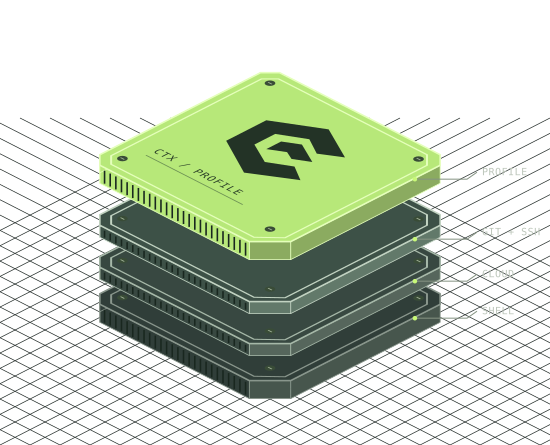

Client context switcher
One shell.
Every client.
Switch Git identities, SSH keys, and cloud profiles when you change directories. Keep each client’s credentials with their workspace.
macOS / Linux / WSL2

Interactive example
Inside a
workspace switch.
Select a client folder to see the identity and credentials its profile selects.
Read the switching guide
Client workspace
$ cd ~/clients/acme
- Git identity
- dev@acme.example
- SSH alias
- github-acme
- AWS profile
- acme-dev
Documentation
The field guide.
From your first profile to a verified client connection.
Install ctxPrepare your shell and check your tools.Create a profilePair a workspace with its accounts and keys.Clone with GitHubUse the client’s SSH alias for a new checkout.Run commands and scriptsGive one process a specific client identity.Troubleshoot activationTrace the folder, identity, and connection.